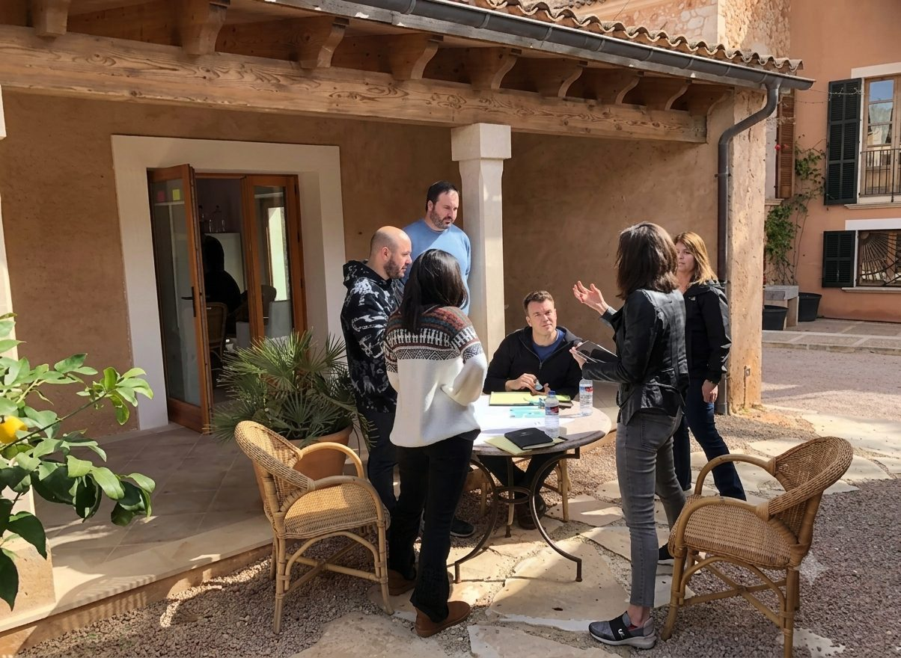
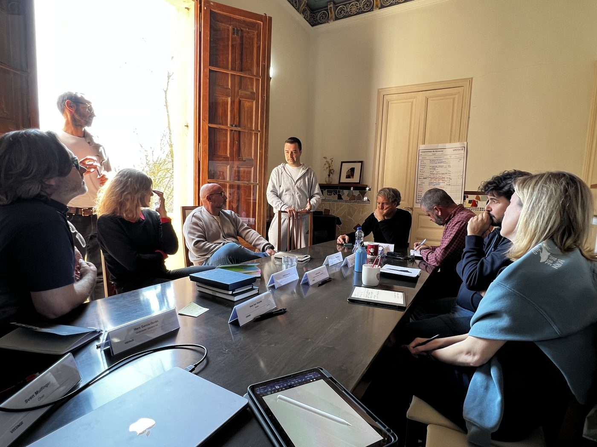
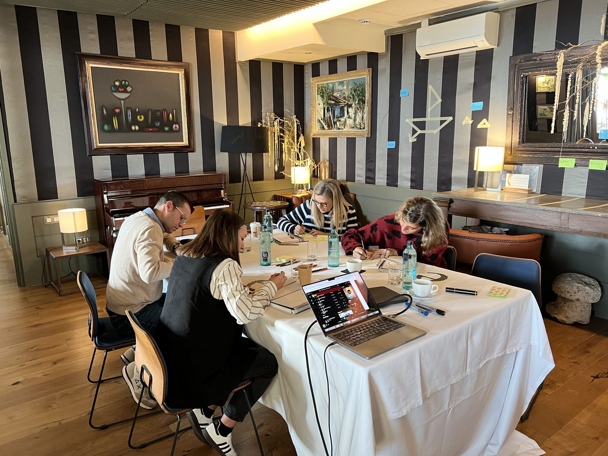
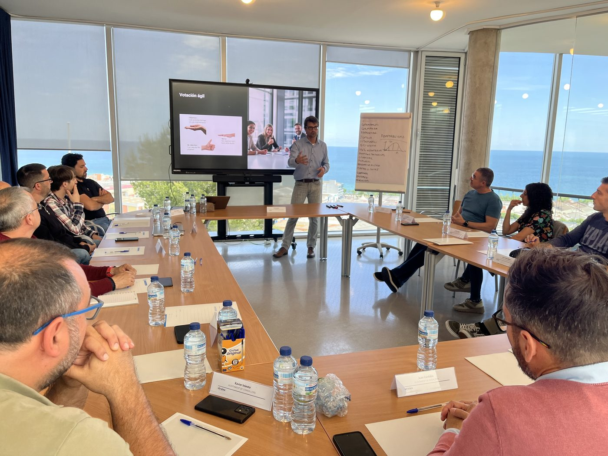

When rapid scale stalls execution,
we resolve the leadership friction.
We eliminate executive friction and decision bottlenecks so ambitious companies scale without breaking.
Battle-tested inside market leaders, aligning scale-ups and post-merger teams
What breaks when fast-growing companies hit pressure
When fast-growing companies and acquired businesses stall, the failure is rarely the product or the deal model: it is executive decision latency, leadership friction, and structural drag that software and slide decks cannot fix.
Source: Noam Wasserman, Harvard Business School
Decision Latency
“Everyone sees the decision that needs to be made. No one is making it.”
- Key hires, capital allocation, and AI bets stall in circular alignment loops.
- Teams pilot fragmented tools bottom-up while the board waits for a coherent strategy.
Co-Founder & C-Suite Fracture
“Meetings get politer. Execution gets slower.”
- Unspoken disagreements, whether between co-founders or merging leadership teams post-acquisition, erode trust and calcify into defensive silos.
- Shifting priorities and ambiguous ownership over modern workflows trigger quiet turf wars.
The Scaling Bottleneck
“The operating habits that worked at 20 people actively suffocate the company at 75+.”
- Headcount and org chart expanded, but decision governance and handoffs never adapted.
- Legacy communication loops collapse under the velocity demanded by AI-era execution.
Not outside theorists.
Operators inside the room.
We embed battle-tested former CEOs and operators directly inside your leadership room to dismantle friction, restore decision velocity, and protect runway. Zero theoretical slide decks. Zero open-ended retainers.
| Traditional consultancies | Generic coaching collectives | Kuma PartnersThe Kuma Standard | |
|---|---|---|---|
| Who delivers | Junior analysts, staffed off a bench | Solo mindset coaches, working in isolation | Former CEOs, CROs, and enterprise operators |
| The focus | Theoretical 100-page slide decks | Isolated one-to-one reflection, detached from the P&L | High-stakes operational mediation and strategic alignment, in the same room |
| Speed to value | Six-month discovery studies | Open-ended hourly retainers with no end date | 14-day scans and 60-day alignment sprints |
Structured Interventions.
Built for Scale.
Predictable scope. Defined milestones. Zero open-ended consulting retainers.
The 14-Day Leadership Friction Scan
8–10 confidential executive interviews, team communication pulse check, and a facilitated C-suite/board debrief.
- Surfaces normalized friction patterns and cross-functional silos
- Identifies decision bottlenecks and unaddressed board exposure
- Delivers a concrete 90-day execution roadmap (no passive slide decks)
Intake
Synthesis
Debrief
The 60–90 Day Executive Alignment Sprint
Hands-on co-founder mediation, executive team restructuring, decision-governance redesign, and cross-functional facilitation.
- Rebuilt operating cadences the leadership team actually keeps
- Binding behavioral & governance compacts between C-suite peers
- Unifies bifurcated leadership teams post-acquisition under a single decision framework
- Restored decision velocity measured against board KPIs
Strategic Scaling Advisory
Embedded strategic counsel and executive sparring for CEOs and key executives through hyper-growth or M&A transitions.
- Confidential sounding board for fundraising and capital allocation
- Direct partner access between board cycles, not just quarterly reviews
- Continuity through high-stakes inflection points that break newer advisors
The High-Stakes Executive Offsite.
Designed & Moderated by Operators.
Most executive offsites default to polite status updates, vague brainstorms, and zero operational accountability. We step into the room to design the strategic agenda, surface the unspoken tensions, and facilitate the hard commercial debates that your team has been avoiding.
- Pre-Offsite Stakeholder Intake
Confidential 1:1 interviews with each attendee to map hidden misalignments in advance.
- In-the-Room Operator Moderation
1 to 5 days of direct facilitation by former C-suite operators, keeping debate focused on execution and P&L reality.
- Post-Offsite Binding Compact
Transforming open discussion into explicit decision rights, resource trade-offs, and 90-day commitments.
Annual Strategy Planning · Post-Fundraise Roadmaps · Post-M&A Integration · Co-Founder / C-Suite Re-alignment
1 to 5 days on-site (Worldwide)
Fixed scope tailored to executive team size & offsite duration
We handle the intellectual architecture, strategic mediation, and alignment outcomes. Your team or Chief of Staff manages venue and travel logistics, unless you need us to step in.
Where Strategic Alignment Happens: Inside the Room & On-Site






The AI bottleneck is rarely the technology. It is executive alignment.
Tools and models fail when the leadership room is split by territorial fear, opaque governance, and outdated KPI incentives. Former CEOs embed directly with your C-suite to build an AI-native operational cadence.
The 14-Day AI Leadership Friction Scan
8–10 confidential executive interviews across functional leads, an audit of current informal AI usage vs. board expectations, and a facilitated executive debrief to surface hidden organizational resistance, political roadblocks, and decision paralysis.
High-impact Friction Matrix, Executive Alignment Scorecard, and a 90-day operational action plan.
The AI Operating Model Redesign
4–8 week hands-on sprint embedding former operators inside your leadership team. We restructure decision rights, rewrite functional KPIs, and redesign cross-functional workflows so teams can deploy AI without crashing organizational velocity or culture.
Concrete governance boundaries, updated operational RACI, and redesigned workflows tied to EBITDA metrics.
Fractional AI Transition Partner
A dedicated former CEO/COO embedded inside the room 1–2 days per week for 3–6 months. Acts as the CEO’s high-conviction sparring partner to hold department heads accountable, resolve emerging cross-department friction, and ensure execution velocity remains high.
Proven Impact Inside Critical Inflection Points
How we help scale-stage leadership teams protect decision velocity and resolve operational bottlenecks.
Scaling From 45 to 120 Employees
Decision latency increased significantly following a €25M round. Founders were caught in tactical execution, and strategic product pivots were delayed by 4 months due to unexpressed executive friction.
Deployed a 14-Day Leadership Friction Scan followed by a 60-Day Executive Alignment Sprint. Clarified decision governance and restructured C-suite reporting lines.
Deliberation time on core product decisions dropped from weeks to 48 hours. Key executive retention reached 100% through the scaling phase.
Post-Acquisition Integration
Cultural divergence and executive distrust between original founders and acquired leadership slowed integration, eroding customer delivery timelines.
Implemented systemic leadership diagnostics across both teams, redesigned operating cadences, and established unified leadership accountability.
Eliminated cross-team friction, accelerated integration milestones by 3 months, and protected operational delivery.
Co-Founder Alignment & Executive Compact
Silent conflict between technical and commercial co-founders over commercial roadmap priorities led to conflicting signals across engineering and sales, threatening runway.
Embedded multi-practitioner mediation. Facilitated structured, candid alignment sessions to uncover underlying assumptions and draft a binding operational compact.
Realigned executive roadmaps within 3 weeks, re-established founder trust, and unlocked board approval for international expansion.
Client details anonymized to protect confidentiality.
Where Is Your Leadership Team
Losing Speed?
A 90-second diagnostic for founders, CEOs, and boards to identify the leadership dynamics quietly putting execution, alignment, and runway at risk.
Assess Your Leadership Team's Friction Score
Answer 7 short questions to evaluate executive decision velocity, candor, and governance. Takes about 90 seconds.
Whose leadership dynamics are you evaluating today?
Where do the real strategic debates happen?
How fast does yourthe leadership team execute critical calls (pivots, key hires, capital allocation)?
What is the current state of trust between key leadership peers?
Who actively challenges the CEO's assumptions on high-stakes decisions?
When core targets or delivery deadlines slip, how does the executive team react?
How are operational friction and execution misses handled with the board?
Where is growth creating the most organizational strain?
Where should we send your full diagnostic breakdown?
Your diagnostic index will appear immediately on-screen. A confidential benchmark summary will be sent to your work email.
Protect the Investment.
Stabilize the Team.
Most venture scale-ups and acquired businesses stall on leadership friction, not technology. We act as confidential intervention operators for VC and PE operating partners to stabilize executive teams, integrate M&A assets, and protect deal value.
Pre-Emptive Diagnostics
Uncovering latent executive friction and circular decision loops before they impact board KPIs and burn runway.
Founder & C-Suite Realignment
Mediating territorial disputes, ambiguous reporting lines, and cultural divergence between merging executive suites.
Executive Transitions
Facilitating smooth, dignified C-suite restructuring and founder role redesigns without organizational whiplash.
Frequently Asked Questions.
Direct answers on diagnostic scope, VC portfolio support, discretion, and operational velocity.
Have a specific or sensitive situation?
Speak directly with a Managing Partner →Executive friction is rarely purely operational. It is often cultural. Nuance, directness, and confrontation carry vastly different meanings across American, British, DACH, French, and Southern European executive cultures. Our Managing Partners are native speakers across 5 languages (English, Deutsch, Français, Português, and Español) who have built and scaled international enterprises. We mediate high-stakes tensions within their cultural context, ensuring communication breakdowns do not turn into operational deadlocks.
In distributed and remote scale-ups, leadership misalignment remains hidden longer. Without physical proximity, tensions surface as passive friction: silent Slack channels, delayed roadmap decisions, and avoidance of tough commercial trade-offs. We adapt our diagnostics specifically for asynchronous environments by auditing communication cadences, information flow, and decision ownership before bringing remote C-suites into targeted, in-person offsites or structured virtual alignment sprints.
We deploy former operators inside the room, not junior analysts or isolated mindset coaches. Traditional management consultancies deploy junior associates to build 100-page slide decks often prepared with AI from the sidelines. Generic executive coaches focus on isolated, 1-on-1 personal reflection detached from commercial reality. Every Kuma partner is a former CEO or C-suite operator who diagnoses operational friction, mediates founder stalemates, and establishes binding governance compacts tied directly to runway, P&L, and board milestones.
The optimal window is pre-emptive: immediately post-raise, during phases of aggressive hypergrowth, or during an M&A transition before cultural divergence impacts board KPIs. If key decisions are stalling for more than 48 hours or unspoken co-founder disagreements are causing departmental silos, a 14-Day Scan quickly surfaces root causes without disrupting daily operations.
Total discretion is the foundation of our practice. 1:1 interviews conducted during our diagnostics are strictly confidential. We synthesize friction themes, decision latency points, and governance bottlenecks without attributing sensitive quotes to specific individuals. This creates a psychologically safe environment where executives can surface real commercial tensions without fear of political backlash or compromised board standing.
Yes. We frequently moderate standalone 1 to 5-day executive offsites worldwide for annual strategy planning, post-fundraise roadmaps, or co-founder realignments. We handle the intellectual architecture, pre-offsite stakeholder intake, and in-room moderation to ensure the session yields binding 90-day compacts rather than vague brainstorms. Should deeper operational restructuring be required, teams can seamlessly transition into a 60–90 Day Executive Alignment Sprint.
We design and facilitate high-conviction Portfolio Founders Days and confidential Peer Masterminds for venture capital and private equity firms. Rather than generic panels or celebratory networking, our Masterminds bring portfolio CEOs together in curated, closed-door environments moderated by former operators. We facilitate candid, P&L-grounded discussions around cash runway management, executive team restructurings, and board governance dynamics, turning passive investor portfolio events into active leadership de-risking sessions.
Our process stabilizes leadership teams rather than destabilizing them. Executive turnover during scaling typically stems from unexpressed friction, role ambiguity, or lack of clear decision authority. By establishing objective governance compacts and clarifying decision rights during our 14-Day Scan and 60–90 Day Sprint, we eliminate the silent political friction that drives top-tier executives to resign. In our previous interventions, leadership teams have achieved 100% key executive retention through their scaling milestones.
Yes. When our diagnostic reveals irreconcilable vision fractures or an executive who cannot scale with the company's growth stage, we help founders and boards manage the transition without organizational whiplash. Because our partners have executed executive exits as CEOs, we mediate role redesigns, equity transitions, or dignified exits while maintaining company morale, operational continuity, and board alignment.
We measure success through operational velocity and board-level KPIs, not subjective satisfaction scores. Key benchmarks include concrete reductions in decision latency (e.g., deliberation cycles dropping from weeks to under 48 hours), 100% executive sign-off on 90-day governance compacts, stabilization of cross-functional delivery roadmaps, and the elimination of second-guessing at the board table.
Research consistently shows that up to 70%–90% of mergers fail to achieve their stated value, with executive and cultural clash cited as the primary driver. We do not handle back-office IT migrations, payroll harmonization, or legal entity consolidation. We focus exclusively on the human and operational friction that stalls joint execution: former CEOs and operators embed directly inside the combined C-suite to resolve territorial friction, clarify overlapping authority, and restore 48-hour decision velocity within weeks.
Distrust post-acquisition usually stems from ambiguous autonomy, misaligned incentives, or competing operating speeds. We conduct confidential 1:1 diagnostics across both leadership groups to surface unspoken resentments without corporate politics. Through facilitated, operator-led mediation, we draft binding operational compacts that define explicit decision boundaries, resource trade-offs, and reporting lines before cultural drift threatens key milestones.
The most effective window is pre-emptive: immediately after the transaction closes, during the first 30 to 60 days of joint execution. However, we are frequently deployed as an acute intervention partner by PE operating partners or boards 3 to 6 months post-close, when decision velocity has visibly slowed, commercial roadmaps have stalled, or key acquired executives are at flight risk.
High-performing acquired founders and executives rarely leave over compensation; they leave because of bureaucratic drag, perceived loss of agency, and second-guessing from their new peers. By conducting a 14-Day Leadership Friction Scan and establishing transparent governance compacts, we eliminate the silent political friction and circular approval loops that drive top operators away, protecting deal value and executive retention through critical milestones.
We do not work with everyone.
By design.
Our interventions are high-touch, direct, and senior-led. We protect our focus by partnering only where we can move the needle on executive execution.
Who We Partner With
- Series A–C scale-ups & merged entities hitting decision drag
- Founders & CEOs committed to radical candor in the room
- Executive teams ready to reset operating habits, not delegate to HR
- VC & PE operating partners stabilizing high-stakes portfolio growth
Who We Do Not Serve
- Pre-product-market fit or early-stage exploratory teams
- Passive mindset coaching detached from commercial P&L reality
- Back-office IT/PMI or political air cover for layoffs
- Delegated initiatives where the CEO and C-suite will not participate
If your leadership team meets this standard of readiness, we can help.
Schedule a conversation ↓Unblock your executive execution.
Schedule a confidential 30-minute introductory conversation with a Kuma Managing Partner to assess your leadership team's current friction points.
- Direct Partner Access: No junior sales reps or account managers. You speak directly with Sven or Vincent.
- Strict Confidentiality: All initial diagnostics and conversations are covered under mutual non-disclosure.
- 24-Hour Turnaround: We review your company context and respond within one business day.
Prefer direct email? Reach the partners directly at vincent@kuma.partners
Thank you.
Your context has been received by the Kuma Partners team.
A Managing Partner will review it personally and come back to you within 24 business hours.
If the situation is one we can genuinely help with, we'll suggest the most useful next conversation.
Deploying in person worldwide for high-stakes scans, interventions, and offsites.
Executive nuance and conflict resolution delivered in your leadership team's own language.